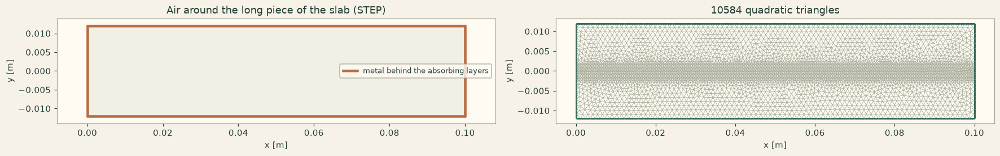

Docs › Examples › Dielectric slab waveguide
Wave optics, guided waves · 2D
Dielectric slab waveguide
A polyethylene slab in air guides millimetre waves; its TE and TM modes are computed and one of them is launched along the guide.

What it computes
OneSimulation cuts the slab and the air from STEP plates and solves the out-of-plane field with quadratic triangles: on a short Bloch-periodic segment the resonances for a given propagation constant give the dispersion of every guided mode, and in a long piece wrapped in perfectly matched layers a line current excites the fundamental mode, whose propagation constant is read from the phase along the axis. The script that builds the STEP file comes with the notebook.
What it checks
52 guided TE and TM modes over nine propagation constants match the exact dispersion relation of the symmetric slab to at most 4.7e-4 in frequency (1.5e-3 for a mode just above cutoff), and the TE0 mode launched at 60 GHz has the effective index 1.42889 against the exact 1.42866 (1.6e-4).
Geometry
The notebook starts at the import of the CAD files dielectric_slab_waveguide_modes.step, dielectric_slab_waveguide_modes_cell.step, dielectric_slab_waveguide_modes_cell_core.step, dielectric_slab_waveguide_modes_core.step: STEP (AP242), readable by any CAD program, with the names of the faces that the boundary conditions use. Put them next to the notebook.

The geometry script
The script dielectric_slab_waveguide_modes_geometry.py builds the geometry with the CAD objects of OneSimulation and writes the files. Change a dimension there, run it, and run the notebook again.
"""Geometry of the OneSimulation example "Dielectric slab waveguide".
Builds with the CAD objects of OneSimulation, as thin plates, a polyethylene slab 4 mm thick in air:
the air around a 100 mm long piece of it, 24 mm high, including the absorbing layers
(dielectric_slab_waveguide_modes.step), the slab in it (dielectric_slab_waveguide_modes_core.step),
and a 0.5 mm long periodic segment of the guide between metal walls 24 mm apart for the mode analysis
(dielectric_slab_waveguide_modes_cell.step with its slab dielectric_slab_waveguide_modes_cell_core.step).
The faces keep the names x_min, x_max, y_min, y_max.
"""
from onesim.cad.d3 import Box
core, thickness = 4e-3, 1e-3
for name, length, height in (("", 0.1, 0.024), ("_cell", 0.5e-3, 0.024)):
Box(
origin=(0.0, -height / 2, 0.0), length=length, width=height, height=thickness
).save(f"dielectric_slab_waveguide_modes{name}.step")
Box(origin=(0.0, -core / 2, 0.0), length=length, width=core, height=thickness).save(
f"dielectric_slab_waveguide_modes{name}_core.step"
)The notebook
The complete notebook, cell by cell. Run it to produce the figures and the comparison printout.
A slab of thickness \(d=4\) mm and index \(n_1=1.5\) in air (\(n_2=1\)) guides a wave whose field decays exponentially outside the slab. A guided mode \(u(y)\,e^{\mathrm i\beta x}\) has a propagation constant between the wavenumbers of air and of the slab, \(k_0<\beta<n_1k_0\); its effective index is \(n_\text{eff}=\beta/k_0\). TE modes have the electric field \(E_z\) out of the section, TM modes the magnetic field \(H_z\).
Two models on the section:
- Mode analysis. A segment 0.5 mm long with Bloch periodic ends carries the field \(u(x+L)=u(x)e^{\mathrm i\beta L}\); metal walls 12 mm from the axis close it, far outside the guided fields. For each \(\beta\) the resonance frequencies of this segment below the light line of air are the frequencies of the guided modes.
- Propagation. A line current on the axis of a 100 mm long piece excites the TE\(_0\) mode at 60 GHz; perfectly matched layers around the piece absorb what leaves it.
| boundary | mode analysis | propagation | |---|---|---| | x_min, x_max | Bloch periodic, phase \(\beta L\) | perfect conductor behind a PML of 12 mm | | y_min, y_max | perfect electric conductor | perfect conductor behind a PML of 5 mm |
Reference (D. Marcuse, Theory of Dielectric Optical Waveguides, 2nd ed., §1.3; K. Okamoto, Fundamentals of Optical Waveguides, 2nd ed., §2.1). With \(\kappa=\sqrt{n_1^2k_0^2-\beta^2}\) and \(\gamma=\sqrt{\beta^2-n_2^2k_0^2}\) the modes of order \(m\) satisfy
import numpy as np
from onesim.cad.exchange import load
from onesim.materials import VACUUM_PERMEABILITY, VACUUM_PERMITTIVITY
from onesim.materials.electromagnetic import (
CartesianPML,
IsotropicElectromagneticMaterial,
RegionwiseElectromagneticMaterial,
)
from onesim.meshing import PeriodicPair, TriangularMesher
from onesim.numerics import Numerics
from onesim.numerics.fem import FiniteElement, Lagrange
from onesim.numerics.linear import ComplexSparseDirect
from onesim.physics.electromagnetics import (
BlochPeriodicBoundary,
FrequencyDomainMaxwell,
PerfectElectricConductor,
harmonic_resonances,
)
from onesim.simulation import Problem, Simulation
from onesim.visualization import plots, theme
from scipy.optimize import brentq
theme.set()
core_index = 1.5
light = 1 / np.sqrt(VACUUM_PERMEABILITY * VACUUM_PERMITTIVITY)Geometry and mesh
load reads the long piece with its slab and the periodic segment with its slab; section cuts them at half thickness. Quadratic triangles of 0.25 mm (segment) or 0.4 mm (long piece) in the slab and 0.5 mm or 1.2 mm in the air; the ends of the segment are divided alike so that their nodes match.
solids = {
name: load(f"dielectric_slab_waveguide_modes{name}.step")
for name in ("", "_core", "_cell", "_cell_core")
}
section = lambda name: solids[name].section((0, 0, 1), origin=(0, 0, 0.5e-3))
piece, cell = section(""), section("_cell")
core, cell_core = section("_core").named("core"), section("_cell_core").named("core")
thickness = core.size[1]
ends = {"x_min": 0.125e-3, "x_max": 0.125e-3}
cell_mesh = TriangularMesher(
target_size=0.5e-3,
embedded_regions=(cell_core,),
region_sizes={"core": 0.25e-3},
hard_sizes=ends,
).generate(cell)
mesh = TriangularMesher(
target_size=1.2e-3, embedded_regions=(core,), region_sizes={"core": 0.4e-3}
).generate(piece)
fig = plots.figure(1, 2, size=(16, 4.5))
plots.geometry(
piece,
selection={"metal behind the absorbing layers": piece.boundaries.all},
labels=False,
title="Air around the long piece of the slab (STEP)",
ax=fig[0],
)
plots.mesh(
mesh,
groups=("all",),
legend=False,
title=f"{mesh.cell_count} quadratic triangles",
ax=fig[1],
)
plots.show()Mode analysis
For each propagation constant the segment is assembled with the Bloch phase of its ends and harmonic_resonances returns its lowest resonances; those below the light line of air, \(f<c\beta/2\pi\), are guided modes. The segment is so short that the periodic images \(\beta-2\pi/L\) of the modes lie far above the frequencies studied.
material = RegionwiseElectromagneticMaterial(
{"core": IsotropicElectromagneticMaterial(relative_permittivity=core_index**2)},
default=IsotropicElectromagneticMaterial(),
)
numerics = Numerics(
spatial=FiniteElement(element=Lagrange(order=2)),
linear_solver=ComplexSparseDirect(),
)
models = {
polarization: FrequencyDomainMaxwell(
domain=cell.domain(),
frequency=50e9,
material=material,
polarization=polarization,
phasor_convention="exp(-i*omega*t)",
amplitude_convention="peak",
)
for polarization in ("Ez", "Hz")
}
segment = lambda polarization, beta: harmonic_resonances(
Simulation(
problem=Problem(
name="Slab segment",
geometry=cell,
physics=(models[polarization],),
boundary_conditions=(
BlochPeriodicBoundary(
physics=models[polarization],
pair=PeriodicPair(cell.boundaries.x_min, cell.boundaries.x_max),
wavevector=(beta, 0.0, 0.0),
),
PerfectElectricConductor(
physics=models[polarization],
boundary=cell.boundaries.y_min | cell.boundaries.y_max,
),
),
),
mesh=cell_mesh,
numerics=numerics,
).solve_stationary(),
models[polarization],
count=8,
near=1e9,
)
betas = np.linspace(600.0, 3000.0, 9)
guided = {
(polarization, beta): [
f.real
for f in segment(polarization, beta)
if f.real < light * beta / (2 * np.pi)
]
for polarization in ("Ez", "Hz")
for beta in betas
}The exact dispersion relation is solved for the frequency at each \(\beta\) and compared mode by mode.
exact_k0 = lambda beta, order, p: brentq(
lambda k: np.sqrt(core_index**2 * k**2 - beta**2) * thickness
- order * np.pi
- 2
* np.arctan(p * np.sqrt(beta**2 - k**2) / np.sqrt(core_index**2 * k**2 - beta**2)),
beta / core_index * (1 + 1e-12),
beta * (1 - 1e-12),
)
ratio = {"Ez": 1.0, "Hz": core_index**2}
names = {"Ez": "TE", "Hz": "TM"}
exact = {
(polarization, beta): [
light * exact_k0(beta, m, ratio[polarization]) / (2 * np.pi)
for m in range(4)
if beta * thickness * np.sqrt(core_index**2 - 1) > m * np.pi
]
for polarization, beta in guided
}
print(
"beta [rad/m] mode f computed [GHz] f exact [GHz] n_eff computed n_eff exact rel. difference"
)
for (polarization, beta), found in guided.items():
for m, (computed, reference) in enumerate(zip(found, exact[(polarization, beta)])):
print(
f"{beta:12.0f} {names[polarization]}{m} {computed / 1e9:16.4f} {reference / 1e9:13.4f} "
f"{light * beta / (2 * np.pi * computed):14.5f} {light * beta / (2 * np.pi * reference):11.5f} {abs(computed / reference - 1):15.1e}"
)
print(
f"largest relative frequency error over all modes: "
f"{max(abs(c / r - 1) for key in guided for c, r in zip(guided[key], exact[key])):.1e}; "
f"modes found {sum(len(v) for v in guided.values())}, modes predicted {sum(len(v) for v in exact.values())}"
)All modes agree with the dispersion relation to a few parts in \(10^4\), the higher ones near their cutoff to about \(10^{-3}\), where their fields reach out to the metal walls of the segment. The walls also hold a mode or two right below the light line that the open slab no longer guides; they are the modes found beyond the prediction.
Propagation of the fundamental mode
A narrow Gaussian line current \(J_z\) on the axis, 25 mm from the left end (13 mm from the layer), radiates into the slab and into the air. The damping of the PML grows quadratically into the layers. Along the axis, beyond 20 mm from the source, the field is the TE\(_0\) mode plus a decaying radiated part; the slope of its phase is the propagation constant.
frequency = 60e9
omega = 2 * np.pi * frequency
length, height = piece.size[0], piece.size[1]
damping = lambda x, y, z: np.column_stack(
(
3
* omega
* np.clip((np.abs(x - length / 2) - (length / 2 - 0.012)) / 0.012, 0, None)
** 2,
3 * omega * np.clip((np.abs(y) - (height / 2 - 0.005)) / 0.005, 0, None) ** 2,
0 * x,
)
)
source = lambda x, y, z: np.column_stack(
(0 * x, 0 * x, np.exp(-((x - 0.025) ** 2 + y**2) / (2 * 0.4e-3**2)))
).astype(complex)
model = FrequencyDomainMaxwell(
domain=piece.domain(),
frequency=frequency,
material=CartesianPML(material=material, damping=damping),
polarization="Ez",
impressed_current=source,
phasor_convention="exp(-i*omega*t)",
amplitude_convention="peak",
)
field = (
Simulation(
problem=Problem(
name="Slab waveguide",
geometry=piece,
physics=(model,),
boundary_conditions=(
PerfectElectricConductor(physics=model, boundary=piece.boundaries.all),
),
),
mesh=mesh,
numerics=numerics,
)
.solve_stationary()
.field(model.electric_field)
)
axis = np.linspace(0.045, 0.085, 161)
values = field.evaluate(np.column_stack((axis, 0 * axis)))[:, 2]
beta = np.polyfit(axis, np.unwrap(np.angle(values)), 1)[0]
k0 = omega / light
exact_beta = brentq(
lambda b: exact_k0(b, 0, 1.0) - k0, k0 * (1 + 1e-9), core_index * k0 * (1 - 1e-9)
)
print(
f"\nTE0 at {frequency / 1e9:.0f} GHz: n_eff from the phase along the axis {beta / k0:.5f}, exact {exact_beta / k0:.5f} "
f"(difference {abs(beta / exact_beta - 1):.1e}); the amplitude along the axis varies by {np.ptp(np.abs(values)) / np.abs(values).mean():.1%}"
)Figure
Left: the dispersion diagram, frequency against propagation constant, with the exact curves dashed between the light lines of air and of the slab. Right: the field of the line source at 60 GHz; the guided mode runs along the slab, the radiated waves are absorbed in the layers.
fine = np.linspace(400.0, 3000.0, 200)
curves = {
f"{names[p]}{m}": (
fine[fine * thickness * np.sqrt(core_index**2 - 1) > m * np.pi],
[
light * exact_k0(b, m, ratio[p]) / (2 * np.pi) / 1e9
for b in fine
if b * thickness * np.sqrt(core_index**2 - 1) > m * np.pi
],
)
for p in ("Ez", "Hz")
for m in range(3)
}
found = {
f"{names[p]}{m}": (
np.array([b for b in betas if len(guided[(p, b)]) > m]),
np.array([guided[(p, b)][m] / 1e9 for b in betas if len(guided[(p, b)]) > m]),
)
for p in ("Ez", "Hz")
for m in range(3)
}
x, y = np.asarray(mesh.coordinates).T
fig = plots.figure(1, 2, size=(17, 5.5))
plots.line(
points=found,
reference=curves
| {
"light line, air": (fine, light * fine / (2 * np.pi) / 1e9),
"light line, slab": (fine, light * fine / (2 * np.pi * core_index) / 1e9),
},
xlabel="propagation constant beta [rad/m]",
ylabel="frequency [GHz]",
title="Dispersion of the slab modes (dashed: exact)",
legend="upper left",
ax=fig[0],
)
plots.heatmap(
1e3 * x,
1e3 * y,
field.evaluate(np.column_stack((x, y)))[:, 2].real,
triangles=np.asarray(mesh.cells),
colormap="diverging",
centre=0.0,
limits=(-np.abs(values).max(), np.abs(values).max()),
label="Re E_z [V/m]",
xlabel="x [mm]",
ylabel="y [mm]",
title="Line source in the slab, 60 GHz",
ax=fig[1],
)
plots.show()Going further
Make the slab thinner or the frequency lower until only the fundamental modes are left (single mode below \(V=k_0\tfrac d2\sqrt{n_1^2-n_2^2}<\pi/2\)), or move the source off the axis to excite the odd TE\(_1\) mode as well and see the beating of the two modes along the slab.